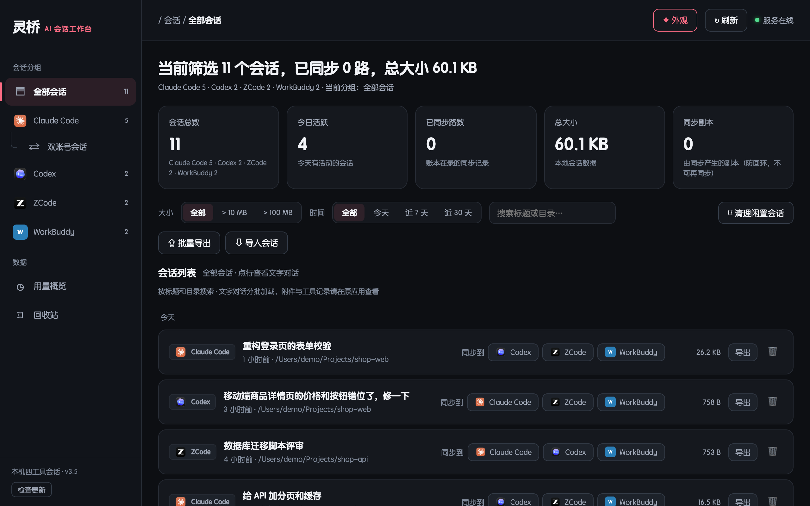
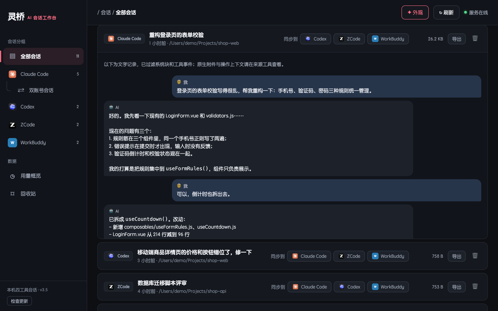
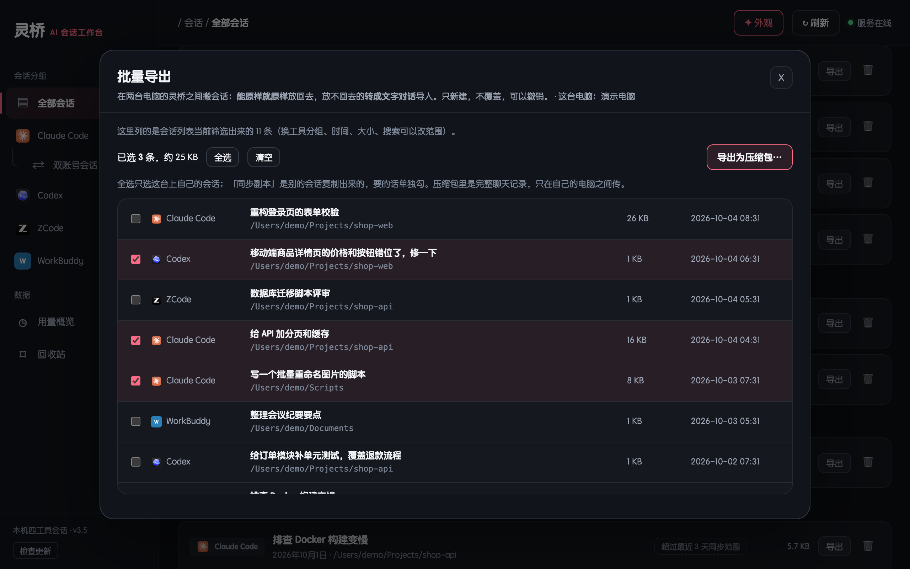
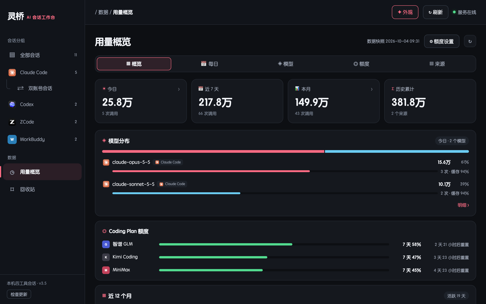

v3.6 现在也支持 Windows 了
四个 AI 编程工具的会话，
四个 AI 编程工具的会话，
一处管好
灵桥把 Claude Code、Codex、ZCode、WorkBuddy 的本地会话放在一起：浏览、搜索、跨工具接着聊、两台电脑之间搬会话，顺便看看各家编程套餐还剩多少额度。
CClaude CodeCxCodex
ZZCodeWWorkBuddy

该有的，都在一个窗口里
不改你的工作方式，只把散在四处的会话收拢起来。
一处看全，一搜就到
四个工具的会话按时间排在一起，按工具、天数、大小筛选，按标题和目录搜索；点开就能看完整对话。
跨工具接着聊
在一个工具里聊到一半，一键转成另一个工具的会话接着聊。四个工具两两之间，12 个方向，重复转不会出两份。
两台电脑之间搬会话
打成压缩包导出，在另一台电脑的灵桥里导入。导入前先预览，导完可以整次撤销。
清理不怕删错
挑出 15 / 30 天没动过的闲置会话或子代理对话，先预览、逐条勾选；删掉的进回收站，随时能恢复。
额度和用量一眼看清
智谱 GLM、Kimi、MiniMax 编程套餐的剩余额度，加上本机 token 用量，按天、按模型统计。
五套皮肤，四种字体
樱桃奶油、海盐蓝、抹茶薄荷、薰衣草、奶油白，挑一个你每天都愿意打开的样子。



会话只留在你的电脑上
灵桥是一个本地程序，没有账号、没有云端。它读写的都是这台电脑上四个工具自己的数据。
- 只在本机运行：界面只监听 127.0.0.1，每次启动换一个随机口令，别的网页和程序调不了。
- 只有三件事会联网：查你填了密钥的套餐额度、检查更新（可以关）、安装时下载依赖。
- 改之前先留后路：同步、导入、删除都先写恢复日志，删掉的进回收站，中途被关掉下次自动补偿。
- 密钥放系统保管：macOS 存钥匙串，Windows 存凭据管理器，不写进任何文件。
下载灵桥
同一套代码，两个版本。四个工具不用都装，装了哪个就显示哪个。
Mac 版
- 需要 Apple 芯片的 Mac，和 Python 3.10 以上（推荐 Homebrew 的 Python 3.13）
- 下载解压后，在终端里进入文件夹运行
bash install.sh - 双击
会话桥.app打开，可以拖到程序坞
Windows 版
- 需要 Windows 10 / 11，和 Python 3.13 以上（安装时勾选「Add python.exe to PATH」）
- 下载解压后，双击
install.bat - 双击桌面上的「灵桥」打开
想在灵桥里一键「检查更新」？用 git clone https://github.com/fangfazz0413-byte/lingqiao.git 安装。所有版本在 Releases。